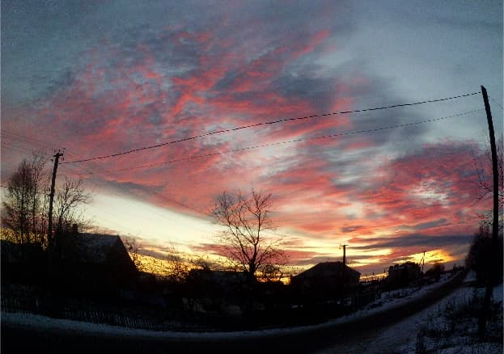

"История будет ко мне милостива, поскольку писать ее буду я".
У.Черчиль
Поскольку, ближайший свидетель настоящего времени я сам, придется очевидцем эпохи мне и быть.
Впервые, появился в этих краях в середине 1960-х ребенком (вывезли родители летом на дачу). Славное было время. Настолько, что взрослым вспоминал то лето со сладкой ломотой. Но, по наблюдениям, у всех воспоминания о раннем сознательном детстве радужные.
Вторично, когда настало время вывозить на дачу собственных детей, в 1990 году купили дом в деревне.
Ленинградские дети, в основном, росли на природе Карельского перешейка, привыкли к запахам его озер, сосновой хвои, сухого песка, черники, звону комаров.
Тут, на Ижорском плато в Волосовском районе ощущения другие: равнинность, ветер, медовый запах трав, слегка навоза и виды не озер и леса, а бескрайних полей, обрамленных густыми еловыми лесами, комаров почти нет. Казалось, не привыкнем. Сначала стерпелось, потом слюбилось.
Шло время и незаметно минусы становились плюсами. За годы нашего капитализма перешеек превратился из жемчужины в скандальную коммуналку: дороги забиты – не въехать, не выехать; к воде не подойти – либо забор с чванливым замком (смотрите, червяки, сколько я наворовал!), либо помойка; в лес не войти, чтобы с человеком не столкнуться. Везде гвалт, визг электропилы, дым от шашлыков. Где были леса и болота – садоводства , домик на домике. Душно и брезгливо стало на перешейке.
На Таллинском направлении не устраивали садоводческих массивов, не запускали электрички. Сюда не бросились нуворишы, чтобы захватить лучшие земли, здесь нет озер, чтобы их загадить, здесь тяжелый еловый лес, чтобы по нему разгуливать, здесь населенные пункты среди продуваемых полей, в жезлонге не разоспишься.
Зато, тут люди живут и работают круглогодично, можно от них помощи ждать хоть трактором, хоть инструментом, хоть советом. Земли много, нет озлобленности от скученности. На своем участке можно хоть голым скакать: можно ставить аистинные гнезда, можно сад разбить на все свои 30 соток, можно картошкой засадить, можно газон английский организовать.
В 90-е деревни еще жили. Можно было работать либо в сельском, либо в лесном хозяйстве, либо на железной дороге, плюс свой огород. Постоянно гудела ферма, проезжали могучие лесовозы.
Ежедневно проносились низколетящие боевые самолеты в сторону полигона "Туганы" в Кингиссепском районе. Не переставало удивлять: взлетевшие с Воронежской, Курской, Тверской областей, они пересекали Россию, чтобы отбомбиться "у нас".
Рождались дети, мамы гуляли с колясками, по ночам разгуливала молодежь по дороге, попадая в свет фар встревоженных водителей. Ранним утром формировалось стадо и уводилось на поле пастухом, вечером развод коров по дворам.
По дороге проезжали телеги, запряженные лошадьми. Летом на сельхозработы приезжали студенты, жили в достаточно благоустроенных бараках, весело проводили время.
На Рождество светились окна домов, колядовали подростки, зарабатывая свои конфетки и яблочки, люди ходили в гости вечерами.
Работали много. Жили небогато, но не бедствовали. В 90-е, когда в городе просто нечего было есть, тут не голодали: и картошка своя, и сало, и консервированные овощи, и грибы, и молоко, и деревенская сметана и даже сыр с колбасой.
Дома стояли надежные, зимние. Самые крепкие хозяйства были у немногочисленных эстонцев. В послевоенные годы население значительно сменилось, многие приехали из центральной России, гонимые голодом 1946-1947 годов. Все говорили на русском, но люди старшего поколения временами переходили на финский, родной язык для этого края в довоенное время. Волосовский район отличался переплетением этносов, не знающих межнациональной вражды.
Времена были уже несоветские, но ранние послесоветские. Ни каких стройматериалов не купить, леса не выписать. Гвоздей и тех негде взять, - приходилось разгибать старые ржавые для строительства целой бани, например. Не оставлялась валяться ни одна палка на дороге. Еще не прошла мода "стукнуть" на соседа, прикупившего где-то стройматериалы, потому, все чеки аккуратно сохранялись. Но времена уже изменились, такие сигналы игнорировались, к изумлению "сознательных". Завистливых, подленьких людишек советская власть наплодила повсеместно, не только тут, но, почему-то в этом районе они "стучали" со вкусом.
Одним словом, в 1990-е деревня еще жила.
Постепенно и незаметно к нулевым годам она, как населенный пункт трудоспособного населения, угасла. Предприятия развалились. В районе, куда можно добраться, работы ни какой, а если есть, унизительно копеечная, дорогу не окупишь. В город на работу ездить чересчур далеко. Кто-то умер, потому, что время пришло, кто-то допился до смерти, кто-то погиб по пьянке, кто-то нашел куда уехать. А что тут еще оставалось делать, как не спиться от безысходности? Выжили (в широком смысле) единицы, как правило, те, у кого были трактора. Правда, и трактора у них были потому, что непьющие и трудолюбивые.
Среди наших соседей жила семья – крепкий дом, ухоженный яблоневый сад, поле картошки, отец-трудяга, мать-трудяга, двое сыновей. К нашему появлению отца уже не было, мать – пенсионерка (потом и ее не стало), младший сын только пришел из армии, хозяйство на старшем.
Старшего звали Саша. Необыкновенный чистюля и любитель порядка. Когда он жил один, в доме настолько все было вылизано и ухожено, что пугало неожиданностью. Человек он был отзывчивый и щедрый: и лопату принесет, и домкрат или инструмент, поможет, чем может. Временами Саша запивал на недельку, в лежку. Когда приходил в себя намывал дом, вычищал сад, штопал крышу, подрубал баню, работал дотемна, собирал, то, что роздано. Не было случая, чтобы он забыл, какие вещи кому давал, в каком бы состоянии на тот момент не находился. Причем отлично помнил, что он пропил, а что дал попользоваться.
У Саши никогда не было жены. Временами он уходил жить к какой-либо пожилой женщине. Возвращался, как правило, после ее смерти, потом находил другую. Была у него такая странность. Со временем запивал все чаще. Умер, когда ему было 45, приблизительно. У очередной "бабушки", уронив голову на стол.
Младшего звали Игорь. Парень он был веселый и "безбашенный". Так получилось, что его юность пришлась на время, когда в деревне мужики начали пить, как лошади, и он принял пьянство, как пример для подражания. Будучи изначально непредрасположеным к алкоголизму, он симулировал опьянение напоказ соседям. Потом симуляция уже не требовалась, втянулся. А начал с того, что женился на девочке из хорошей семьи, работал, много смеялся, радуясь жизни и, норовя выпить с мужиками, чтобы не считали слабаком. Он был тоже отзывчивым. Молодым, но на редкость, "рукастым". К нему обращались как в мастерскую дома быта – все чинил, от наручных часов, до трактора. И всегда с улыбочкой и охотно.
Наконец, жена с ним развелась и покатился он по наклонной. Не работал. Все что было в доме пропил, включая металлическую дверцу от печи. Воровал, по мелочи. Наконец, после очередной кражи трех вилков капусты (надо, хоть что-то есть), хозяину капусты это надоело и заявил он в милицию. Дали три года. Через два Игорь подал аппеляцию на пересмотр дела. Пересмотрели. Дали еще три. Пришел через 6, как всегда улыбающийся, с румянцем на щеках (туберкулез). Вскоре умер. Около 30 было.
Не осталось от хорошей доброй трудолюбивой семьи никого. Пустой дом.
Дом с другой стороны. Жили мать престарелая, участник войны, и сын. К нашему появлению ему было за 40 и работал он токарем на машино-тракторной станции. Нельзя сказать, чтобы был трудоголиком, но работал много, как всем в деревне приходится. Когда инфраструктура начала рассыпаться, работы у него не стало. Промышлял разовыми заработками, сажал картошку на своем огороде, а возможности заработать все меньше-меньше, наконец он стал просто сидеть дома, пропивая пенсию матери. Потом матери не стало, не понять, что он продолжал пить и что есть.
Однажды, появляется у нас, в явно перевозбужденном состоянии с топором в руке и сообщением, что за ним цыган гоняется с пистолетом, спрячьте. На улице тихо-тихо. В его доме никого (нам видно). Еле выпроводили: иди мол, успокойся, мы проследим, чуть-что милицию вызовем. Ушел. Больше его никто никогда не видел. Пропал человек. Дематерилизовался. Даже предположить не берусь куда он мог деться.
Второй дом пустой.
Дом напротив. Жила семья. Отец, хоть и бесноватый был и злоупотреблял, но работал, пока лесопилка не встала. Мать работала до хруста: и на ферме, и дома, и корова своя, и детей двое. Потом отец умирает. Старший сын подрастает и садится в тюрьму. Ферма встает. Молодая мать с маленькой дочкой остается без работы и кормильца. Поднимается и уезжает в Питер к сестре у которой маленькая комнатка в коммунальной квартире в спальном районе. Третий дом пустой.
Так, за два десятилетия, погибли окружающие соседи, люди, которые составляли базу населенного пункта. То же произошло с соседней деревней, то же с областью, то же со страной. Надо быть наивным, считая, что где-то иначе.
Животное может жить только в своей среде обитания (рыба в воде, жираф в Африке, пингвин в Антарктике). Человек приспособился существовать в любой среде – и под водой, и в небе, и в мороз, и в жару. Но человек существо социальное и не может жить без социальной среды. В Деревне социальная среда исчезла и люди погибли. Те, что любят пафосно заявлять об огромадной ответственности, которую несут, хоть раз за что-нибудь ответили?
Значит футбол важнее, чем Родина с ее хребтом крестьянским? Очень надеюсь, ответить придется. И за эти жизни.
Принято считать, - что их жалеть, пьяниц жалких!? Присушиваясь к себе, - что-то мешает отнести этих людей к никчемным. Были-ли они безнравственны? Проверяю простым методом. Во-первых, лжет ли человек? Если, да, дальше можно не трудиться – дрянь человечишка. Так, вот, они были нравственные.
Еще в одном соседнем доме жил человек с редкой судьбой. Звали его Иван Пантелеевич Марченко. Приблизительно 1918 года рождения.
Танкист. Наводчик. Старший сержант.
В 1938 году, во время срочной службы воюет в Финской войне.
В сентябре 1939 участвует в нападении на Польшу.
В июне 1941 года со своей частью в Польше.
Неведомым способом выбирается из всех котлов окружения 41-го года.
Прошел всю войну.
Перед Победой, в 1945-ом в Венгрии, попадает в штрафбат с лишением всех наград и звания.
Получает тяжелое ранение в первом бою и "смывает кровью" судимость.
Получает одну награду по итогу двух войн (если вторжение в Польшу не считать третьей) – медаль "за отвагу" и пульсирующую рану на голове на всю оставшуюся жизнь.
В 1946-47 году голод гонит воина-победителя из родной черноземной Курской области в Ленинградскую, где строится, живет и трудится до последних своих дней.
Физически он был на удивление сильным и выносливым, несмотря на возраст. Высокий, стройный, подвижный. Однажды, довелось нести с ним длинный металлический двутавр – он впереди на плече, я сзади на плече. Моя гордость чуть не лопнула от желания взмолиться о передышке, ключица по сей день помнит ту боль. Ему было за 70, мне за 30.
В их доме детишки непременно получали либо яблочко, либо конфетку, были обласканы. Сам он был всегда отзывчив: и инструмент даст, и в работе поможет. Правда, не мог ничего объяснить на словах – хватался все делать сам, приходилось присматриваться и повторять, бегая за ним. Несмотря на щедрость, к окружающему "хозяйству" был внимателен и никогда не пропускал если, "что не так лежит".
Бытового мата от него не слышал, разве, что иногда на жену прикрикнет. Алкоголь употреблял, но не злоупотреблял. Психически был уравновешен, но если доводили, хватался за топор. И у оппонента не оставалось сомнений, что хряснет. При этом очевидно боялся начальства. Это типично для нас, выросших при советской власти, не бояться врагов, бояться своих, но его пример, русского воина, особенно угнетает.
О своих военных подвигах не рассказывал никогда, ничего. Он вообще не был рассказчиком. Сохранилось ощущение, что военная жизнь для него была настолько прошлая, что, как и не его, вовсе. На вопросы отвечал не просто скупо, - ему приходилось мысленно останавливаться, вспоминая. И видно было, как внутренний взгляд медленно поднимается и плывет в далекое, навсегда забытое. Есть основания считать, его никогда никто не спрашивал о войне. Это я о нашем лицемерии, типа "никто не забыт, ничто не забыто", "мы любим вас ветераны", "спасибо деду за победу". Особенно мне нравится: - "Мы выиграли войну!". Кто это - вы?
И гвардейская ленточка. Для дедов, это был знак особого отличия, свидетельством храбрости и пролитой крови. Для внуков - грязная тряпочка, на антенне авто, болтающаяся круглый год.
- Иван Пантелеевич, это правда, что финская война была короткая, победная и малокровная?
Шевелит синими губами. Блестит очками. Молчит, начиная моргать.
Вдруг резко, с напором:
- Ты, что ….. ? ( в многоточии читается: - "дурак ?").
- Так я и думал, врет наша пропаганда …
Он успокаивается. Видно, что вспоминает.
- Помороженных очень много было,…очень.
- Вы тоже?
- В танке тепло. (Улыбается).
- А правда, что наши танки были лучше немецких?
- Эээээ… Наши, конечно лучше…. Эээээ….
- Вы встретили войну в Польше. Что же у вас в Польше одна винтовка на троих была?
Начинает шумно дышать, потом выплевывать отдельные междометия. Ничего внятного не услышав, хочу начать уточнять. Вижу его напряженный взгляд, сжатые кулаки и желание уточнять уходит.
- Иван Пантелеевич, вы много смертей видели?
Молчит. Взгляд уплывает внутрь. Молчит.
- Да.
Молчит.
- Командир полка. Танк рядом шел. Погиб. Бомба прямо в башню…
Молчит.
Прочитав "Ледокол" Виктора Суворова, очень хотел узнать мнение о книге Ивана Пантелеевича (а он был человек читающий), но не решался. Наконец, помявшись: так, мол, и так, новый взгляд на историю, опасаюсь предложить… А он спокойно: давай-давай.
- Иван Пантелеевич, но это такая книга … Может не понравится, может читать не будете…
- Давай-давай.
Дал.
Проходит неделя.
Смотрю, он следует к нашему дому с необыкновенной подвижностью, выкрикивая какую-то невнятицу.
Я на встречу.
Он потрясает книгой и повторяет ту же гневную невнятную фразу.
- Что случилось, Иван Пантелеевич?
Он сворачивает здоровенный кукишь в мою сторону.
- Вот ему!
Я проблеял нечленораздельное.
Он, еще раз мне кукишь.
- Вот ему!
Иван Пантелеевич, а за что вы в штрафбат попали и когда?
- В 45-ом, в Венгрии.
- ?
- Лейтенантик молодой пришел. Венгерку снасильничать хотел.
- И вы ему не позволили?
Блестит очками недоуменно.
- Так, мы тоже хотим. Значит нам нельзя, а ему можно? А он выскочил на улицу, давай орать. А там патруль. Нападение на офицера. Всех троих в штрафбат. С разжалованием и лишением наград.
- А, что и как было в штрафбате?
- Ну, там не долго. Сразу в бой. Немцы на прорыв из окружения шли. Дали орудие на троих. Меня, старшего сержанта, командиром расчета. Двух других ко мне в подчинение. Один был капитаном, второй майором.
- А они за что попали?
- А за то же. Все по-блядству. (Рубит рукой, смеясь).
- А дальше?
- А все. Очнулся через несколько дней. Дали медаль за отвагу, сняли судимость и демобилизовали после госпиталя.
- Иван Пантелеевич, вы танкист. Скажите, существовала какая-либо солидарность между танкистами русскими и немецкими?
- ? (Не понимает).
- Ну, к примеру, подбили вы немецкий танк. Танк горит, а немецким танкистам удалось выбраться. Могли они убежать?
- Куда? (Не понимает)
- Куда угодно. Вы танкисты - они танкисты. У них шанс выжить…
Напрягается.
- Так у меня пулемет!!!
- Да, но они же тоже люди, тоже танкисты…
С негодованием:
- Ага, щас! Я им убегу! Ишь чего!
Гневно сверкает очками, напрягаются плечи вокруг несуществующего пулемета и бурчит угрозы в адрес кого-то невидимого.
- Иван Пантелеевич, а у вас после войны из наград медаль за отвагу?
- Ага.
- А до штрафбата награды были?
Чуть подумав:
- Были.
- А какие?
Задумался.
Разошлись.
Проходит день или два, вижу идет к нам. Выхожу навстречу. Он в легком возбуждении.
- Так, что ты хотел спросить?
- ? Ничего вроде…
- Какие награды? Так вот: орденов Красного Знамени - два, Красной Звезды - три, Отечественной Войны – два, Славы – два.
Из чего я сделал вывод, что с 1945 года ему этот вопрос не задавался. Самому тоже было без надобности и эти день-два он провел, вспоминая: какие, сколько и за что.
Кроме дурацкого "ни чего себе" я не произнес и не дал себе труда расспросить подробности. Жалею не о том, что не узнал их для себя, а о том, что человеку можно было сделать приятное проявлением такого интереса. А теперь уже ничего не изменить.
Простите меня Иван Пантелеевич.
Однажды я ему задал вопрос, примерно в такой формулировке: - "Как же может жить тот человек, благодаря которому вы угодили в штрафбат?". Ответ был мгновенный с интонацией удивления: - "Так, он не живет!".
Из дальнейших расспросов выяснилось: все трое, попавшие в штрафбат, остались живы. Списались и встретились после войны. Нашли того лейтенанта. И убили.
Так он мне рассказал. Простыми словами, обыденно и без злости.
Правильней будет "казнили".
Еще одним интересным человеком был Владимир Михайлович Нежданов. Вся его жизнь связана с районом. Воевал. Окончил Лесотехническую академию и работал лесничим. Кто не знает, лесник – человек, следящий за порядком на своем участке леса, лесничий – заведующий лесным хозяйством в целом. Человеком был известным, уважаемым, неглупым и трудолюбивым.
К нашему появлению он уже был на пенсии и занимался, в основном, собственной пасекой. Мед продавал, а у самого к нему была аллергия.
Он рассказывал, что с молодости имел слабое сердце, часто лежал в больнице. Лет в сорок, во время очередной выписки пожилой врач сказал ему, чтобы время не терял, поскольку осталось ему не много, а начинал заниматься пчелами, они подлечат его сердце. Он занялся. И к нашему знакомству, когда было ему за семьдесят, был человеком здоровым, для своего возраста. Временами, рассказывал, сердце прихватывало:
- Иду себе и вдруг от боли падаю на колени – стенокардия. С великим трудом тяну руку к летку. Пчелки начинают жалить ее, а я не чувствую боль на руке, чувствую, как она от сердца оттягивается.
Он вообще, очень уважительно относился к пчелам. Говорил, что больного человека они не жалят, по себе замечал. К каждой капле меда относился бережно (выкачивая сотни литров). Говорил, что за эту капельку, пчела все лето работает, а то и жизнь.
Однажды, я повесил ловушку для пчел и, к своему удивлению, поймал семью. Притащил домой, что делать не знаю. Пошел к нему, хоть не были знакомы. Он, когда узнал, что я пчел завел, так обрадовался этому обстоятельству, что побросал дела и ко мне. Все, что знал, рассказал, всему научил, инструментом снабдил и взял надо мной шефство, приговаривая довольно: - "В нашем полку прибавилось". От него я узнал, что ловушку мою местные пьяницы давно "сфотографировали" и предлагали ему за бутылку принести. Он с возмущением отказался. А мне, потом, пояснял, мол, обрати внимание, среди пчеловодов пакостников не бывает, сам не знаю в чем причина, но пчелы и мерзость несовместимы.
У Владимира Михайловича был глаз "с хитринкой". Это настораживало и заставляло держать дистанцию. Но не припомню от него слов или поступков негативных. Мат не употреблял. Он многое знал, многое умел и угадывалась досада, что некому эти знания передать в пришедшие стылые времена.
Был случай, когда, глядя на скирду сена, он заметил, со вздохом:
- Да, теперь сено складывать правильно не умеют, ведь чтобы оно хорошо и быстро просохло надо сформировать скирду особым образом, а не кучей сваливать. В мое время тоже так делали, но это уже от бездушия. А я умею делать правильно, так как испокон века складывали. Меня научил один пожилой человек, участник гражданской войны. Односельчане мое умение знали, уважали и потому, при скирдовании, я всегда работал наверху, раскладывая сено известным мне способом. Однажды председатель долго смотрел за моей работой и говорит: " Твою скирду не коровам скармливать надлежит, а отправить на выставку народного хозяйства, чтобы люди любовались на произведение искусства". Так от меня никто и не перенял это умение. Не заинтересовались.
Удивительно: почти все, чему за целую жизнь научилось его поколение, оказалось невостребованным поколением приходящим. Когда сажать картошку, как забивать кроликов, как раздоить козу, вычистить пруд, высушить сено, сделать ребенку свистульку – знания сегодня невостребованные и завтра не пригодятся, надеюсь. Они передавались из поколения в поколение и вот, на наших с вами глазах, цепь прервалась. Мы живем в переломное время, не отдавая себе в том отчет.
Когда слышу вопрос: - "Как вы относитесь к времени правления Бориса Николаевича Ельцина?", так и вспоминается: - "Ты хорошо начал, а кончил скверно."